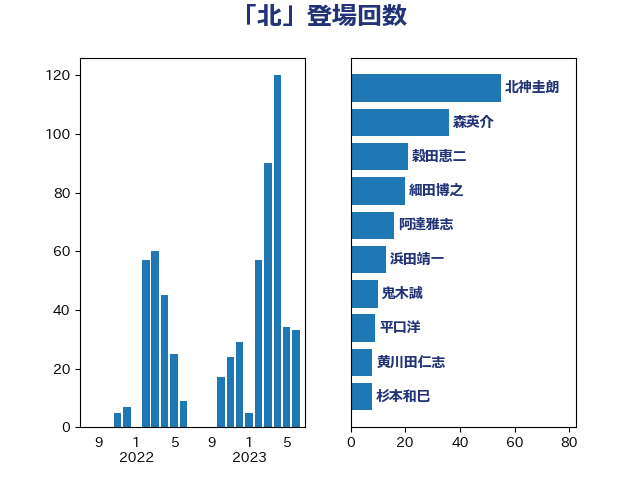

単語「北」

| 北神圭朗 | 無所属 | 28 回 |
| 穀田恵二 | 日本共産党 | 18 回 |
| 森英介 | 自由民主党 | 17 回 |
| 平口洋 | 自由民主党 | 9 回 |
| 浅田均 | 日本維新の会 | 8 回 |
| 茂木敏充 | 自由民主党 | 6 回 |
| あべ俊子 | 自由民主党 | 5 回 |
| 大塚耕平 | 国民民主党 | 5 回 |
| 斉藤鉄夫 | 公明党 | 5 回 |
| 末松信介 | 自由民主党 | 5 回 |
| 稲津久 | 公明党 | 5 回 |
| 細田博之 | 自由民主党 | 5 回 |
| 長峯誠 | 自由民主党 | 5 回 |
| 枝野幸男 | 立憲民主党 | 4 回 |
| 福島伸享 | 無所属 | 4 回 |
| 竹内真二 | 公明党 | 4 回 |
| 紙智子 | 日本共産党 | 4 回 |
| 美延映夫 | 日本維新の会 | 4 回 |
| 若松謙維 | 公明党 | 4 回 |
| 赤羽一嘉 | 公明党 | 4 回 |
| 大石あきこ | れいわ新選組 | 3 回 |
| 林芳正 | 自由民主党 | 3 回 |
| 武井俊輔 | 自由民主党 | 3 回 |
| 篠原孝 | 立憲民主党 | 3 回 |
| 青山繁晴 | 自由民主党 | 3 回 |
| 高橋千鶴子 | 日本共産党 | 3 回 |
| ながえ孝子 | 無所属 | 2 回 |
| 上田清司 | 国民民主党 | 2 回 |
| 井上哲士 | 日本共産党 | 2 回 |
| 伊波洋一 | 無所属 | 2 回 |
| 伊藤孝恵 | 国民民主党 | 2 回 |
| 吉田豊史 | 日本維新の会 | 2 回 |
| 小泉進次郎 | 自由民主党 | 2 回 |
| 山東昭子 | 自由民主党 | 2 回 |
| 岡田克也 | 立憲民主党 | 2 回 |
| 新藤義孝 | 自由民主党 | 2 回 |
| 根本匠 | 自由民主党 | 2 回 |
| 浜地雅一 | 公明党 | 2 回 |
| 熊野正士 | 公明党 | 2 回 |
| 笠井亮 | 日本共産党 | 2 回 |
| 緑川貴士 | 立憲民主党 | 2 回 |
| 足立康史 | 日本維新の会 | 2 回 |
| 逢坂誠二 | 立憲民主党 | 2 回 |
| 野上浩太郎 | 自由民主党 | 2 回 |
| 金子恭之 | 自由民主党 | 2 回 |
| 鈴木宗男 | 日本維新の会 | 2 回 |
| 鈴木貴子 | 自由民主党 | 2 回 |
| 長友慎治 | 国民民主党 | 2 回 |
| 高木毅 | 自由民主党 | 2 回 |
| 三木亨 | 自由民主党 | 1 回 |
| 三木圭恵 | 日本維新の会 | 1 回 |
| 上田英俊 | 自由民主党 | 1 回 |
| 中島克仁 | 立憲民主党 | 1 回 |
| 中根一幸 | 自由民主党 | 1 回 |
| 中西祐介 | 自由民主党 | 1 回 |
| 今井絵理子 | 自由民主党 | 1 回 |
| 伊東信久 | 日本維新の会 | 1 回 |
| 前原誠司 | 国民民主党 | 1 回 |
| 古賀之士 | 立憲民主党 | 1 回 |
| 吉田宣弘 | 公明党 | 1 回 |
| 吉田統彦 | 立憲民主党 | 1 回 |
| 和田有一朗 | 日本維新の会 | 1 回 |
| 坂本哲志 | 自由民主党 | 1 回 |
| 塩田博昭 | 公明党 | 1 回 |
| 寺田静 | 無所属 | 1 回 |
| 小熊慎司 | 立憲民主党 | 1 回 |
| 山下芳生 | 日本共産党 | 1 回 |
| 山岡達丸 | 立憲民主党 | 1 回 |
| 山谷えり子 | 自由民主党 | 1 回 |
| 岬麻紀 | 日本維新の会 | 1 回 |
| 川合孝典 | 国民民主党 | 1 回 |
| 川田龍平 | 立憲民主党 | 1 回 |
| 平山佐知子 | 無所属 | 1 回 |
| 徳永久志 | 立憲民主党 | 1 回 |
| 杉本和巳 | 日本維新の会 | 1 回 |
| 松原仁 | 立憲民主党 | 1 回 |
| 横沢高徳 | 立憲民主党 | 1 回 |
| 沢田良 | 日本維新の会 | 1 回 |
| 河野義博 | 公明党 | 1 回 |
| 浦野靖人 | 日本維新の会 | 1 回 |
| 清水貴之 | 日本維新の会 | 1 回 |
| 渡辺周 | 立憲民主党 | 1 回 |
| 湯原俊二 | 立憲民主党 | 1 回 |
| 牧原秀樹 | 自由民主党 | 1 回 |
| 玉木雄一郎 | 国民民主党 | 1 回 |
| 田村憲久 | 自由民主党 | 1 回 |
| 石井章 | 日本維新の会 | 1 回 |
| 石川昭政 | 自由民主党 | 1 回 |
| 福島みずほ | 社会民主党 | 1 回 |
| 羽田次郎 | 立憲民主党 | 1 回 |
| 菅義偉 | 自由民主党 | 1 回 |
| 西田実仁 | 公明党 | 1 回 |
| 野田佳彦 | 立憲民主党 | 1 回 |
| 金城泰邦 | 公明党 | 1 回 |
| 金子恵美 | 立憲民主党 | 1 回 |
| 長浜博行 | 無所属 | 1 回 |
| 階猛 | 立憲民主党 | 1 回 |
| 高木かおり | 日本維新の会 | 1 回 |
| 高橋はるみ | 自由民主党 | 1 回 |
| 高橋光男 | 公明党 | 1 回 |